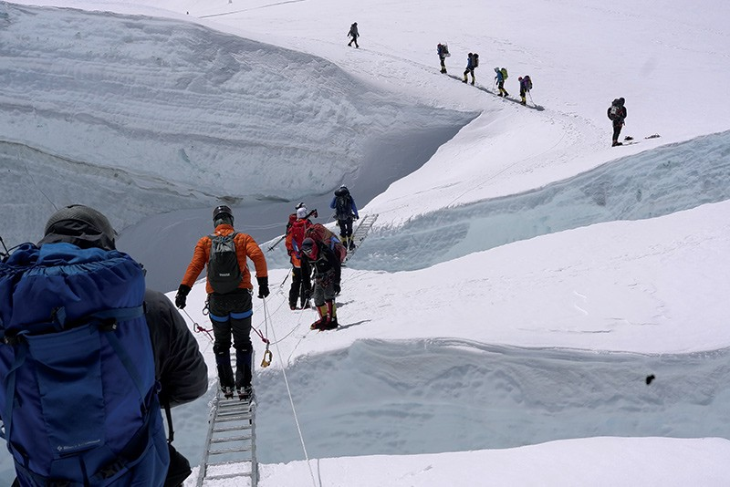

8,849 metres, 29,032 feet.
Estimated two months to climb.
Over 300 deaths.
“But there are men for whom the unattainable has a special attraction. Usually they are not experts: their ambitions and fantasies are strong enough to brush aside the doubts which more cautious men might have. Determination and faith are their strongest weapons. At best such men are regarded as eccentric; at worst, mad.” – Walt Unsworth
“Many years ago the great British explorer George Mallory — who was to die on Mount Everest — was asked why did he climb it. He said, ‘Because it is there.’"- John F. Kennedy
Paul Valin on Climbing Everest
“Even though I had grown up doing a lot of mountaineering, I never thought I’d be able to scale Mount Everest. It was 2013 in Singapore when things started to change. I met Valerie, a friend of mine who made the climb in 2012 and she said, ‘It’s your childhood dream. Just do it!’ And she was right! She became my mentor, and I could never have done it without her.”
“However, there were still a few challenges I had to overcome. Money was one of them — the cost of climbing Everest averages at around $40,000. Time was another aspect. I had to set aside six to seven weeks for the expedition. It was also hard to accommodate my work commitments. Not to mention, there was the challenge of convincing my family that making this trip was a good idea. After all, Mount Everest can be quite a deadly destination.”"There’s never an easy moment when you’re scaling such treacherous slopes. I saw many dead bodies, and unfortunately, lost a friend in the journey between camp three and camp four. The devastation was tough to manage, to say the least. Even so, because I was prepared to face death, I remained obstinately focused.”
“It was 7:10am on May 21. I was at the top of the world — an amazing feeling like no other! Only 5,000 people have seen what I saw. I’d finally accomplished my childhood dream. Aside from the difficulty, the fact that it took us five weeks to reach the top amplified my ecstasy exponentially. The first thing I did was to hug my Sherpa, without whom I would never have made it to the top. I was also very lucky to have experienced perfect weather conditions, and still have some oxygen left in my bottle. I stood at the peak and took in the breath-taking view for a good 40 minutes, enjoying every second of it.”